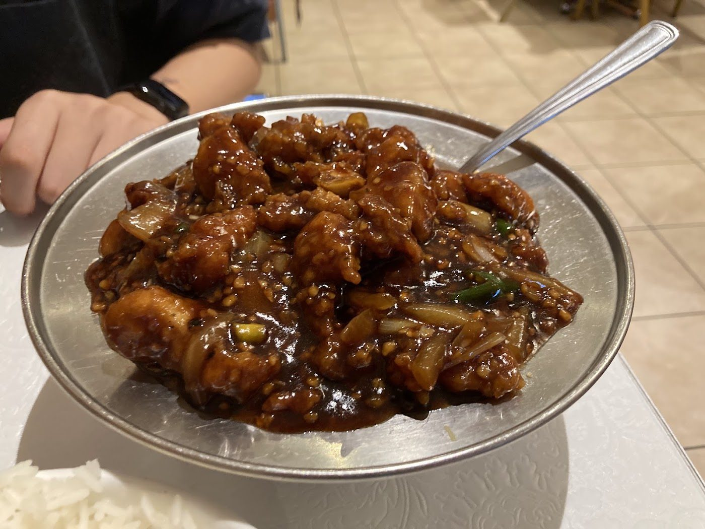

Hakka restaurant · Eglinton Ave E, Scarborough · since 1997
Chili chicken, masala fried rice & Hakka cooking since 1997.
A neighbourhood Hakka restaurant on Eglinton Avenue East in Scarborough. Reviewers keep pointing to the chili chicken — dry or with gravy — and the masala fried rice. Call ahead for take-out, a table, or catering.
- Chili chicken
- Masala fried rice
- Hakka cooking
- Lunch specials
- Take-out & catering
From the wok
Chili chicken
The dish people talk about most, dry or with gravy. Sachin Persaud ordered chili chicken dry with “the perfect amount of spice.” Richard Duan called it “an absolute highlight.” Regulars have been coming back for it for years.
Masala fried rice
Chung Moi’s masala fried rice is a house favourite. Sachin Persaud tried the special masala veg fried rice (“the masala gives it a tasty kick”); Mahad paired masala fried rice with mapo tofu and said he would return.
Hakka plates, lunch specials & take-out
Google describes a casual Hakka room with lunch specials. The restaurant’s own Google description says food is made fresh to order, and asks you to call ahead for pick-up, take-out, reservations, events and catering. Reviewers also mention hot and sour soup, pakora, noodles and a banana fritter with ice cream.
“Since 1997,” take-out, reservations and catering come from the restaurant’s own description on its Google listing. The dish list comes from that listing, its photos, and Google reviews. No prices are listed here. Call (416) 755-5293 to ask about lunch specials or a larger order.
On Eglinton Avenue East
A Scarborough Hakka room since 1997
Since 1997
Chung Moi has been serving Hakka Chinese food on Eglinton Avenue East for decades. The restaurant’s own Google description calls it “your favourite Hakka Chinese food since 1997,” and one reviewer, Anthony P, says he has been coming for more than 25 years. Call ahead for take-out, a table, or catering.
“I ordered the chili chicken dry and special masala veg fried rice. Chili chicken was delicious with tender pieces of chicken with the perfect amount of spice.”
Sachin Persaud, Google review (as of Nov 12, 2026). “Since 1997” is from the restaurant’s own Google description.
What customers say
4.3 ★ from 1,180 Google reviews (checked Nov 12, 2026). Quotes are word for word. Each one says where it was read: on the Google listing itself, or on a public page that copies reviews. Google shows only a handful of reviews without signing in, so some quotes are Google reviews copied by the CanadaResto directory.
★★★★★
Lovely place to get some nice Chinese food. The order came very quickly and tasted amazing. The place has an old place charm.
Prices are reasonable and portion sizes are quite good.
★★★★★
I ordered the chili chicken dry and special masala veg fried rice. Chili chicken was delicious with tender pieces of chicken with the perfect amount of spice. Fried rice was also superb, aa the masala gives it a tasty kick. Price is a little on the expensive side as it came up for $34 with tax, but food quality and taste were worth it, and to be fair, the portion size for the fried rice was large.
Note: they offer meal options for one that are cheaper than getting the full dishes. I didn't know this before I ordered, but saw it on their menu when I went to pickup at the restaurant.
★★★★
Definitely recommended. Massive portions,we ordered Schick and shrimp noodles, mix fried rice,chilli chicken wet,chicken pakora,chicken sweet and sour soup.
Just tell them to spice up the chilli chicken than regular spicy level of you like hot chilli chicken like me.
★★★★★
Masala Fried Rice & Mapo Tofu were great, definitely will return to try other things next time. Solid price and portion as well.
★★★★★
Loved the food here!
The chili chicken was an absolute highlight. The chunks of chicken weren't amazingly large but the balance of flavours was great. The sauce was definitely something you could eat over rice without it being too overwhelming in flavour. The ginger beef was less notable but still a solid dish and the banana fritter + ice cream was a nice way to end off a spicy meal.
I don't find myself in the area often but I would definitely come by again if I do!
★★★★★
Chili Chicken is super blessed🙏🏾🙏🏾
★★★★★
Just incredible Hakka Food from the city! The best!
★★★★★
Nice clean, well decorated restaurant, the staff are nice, service was good. The food was a bit pricy but really good, only complaint was the “sweet and sour chicken w/veg” was more like soup- there was way too much sauce.
★★★★★
The best Hakka spot in Toronto I've been going her for 25+ years and you must get the chilli chicken dry and mixed fried rice. Tried all the spots are Toronto and this beats them all!
Off the menu
Real photos from Chung Moi’s public Google listing and its customers’ reviews. Tap to enlarge.
Visit Chung Moi
2412 Eglinton Ave E
Scarborough, ON M1K 2P3
Eglinton & Pharmacy area
| Monday | 11 a.m.–8:30 p.m. |
|---|---|
| Tuesday | 11 a.m.–8:30 p.m. |
| Wednesday | 11 a.m.–8:30 p.m. |
| Thursday | 11 a.m.–8:30 p.m. |
| Friday | 11 a.m.–9 p.m. |
| Saturday | 12:30–9 p.m. |
| Sunday | Closed |
These are the hours on Google today: closed Sundays, and Saturday opens at 12:30 p.m. Google lists a website that redirects to a third-party restaurant directory, so it isn’t linked here. Call (416) 755-5293 for take-out, a table, or catering.